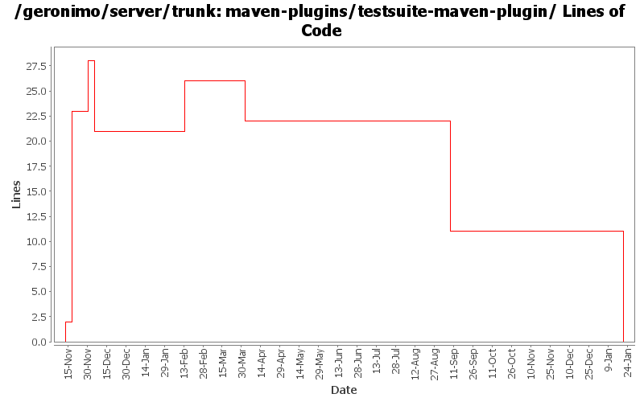

[root]/maven-plugins/testsuite-maven-plugin
 src
(0 files, 0 lines)
src
(0 files, 0 lines)
 main
(0 files, 0 lines)
main
(0 files, 0 lines)
 java
(0 files, 0 lines)
java
(0 files, 0 lines)
 org
(0 files, 0 lines)
org
(0 files, 0 lines)
 apache
(0 files, 0 lines)
apache
(0 files, 0 lines)
 geronimo
(0 files, 0 lines)
geronimo
(0 files, 0 lines)
 mavenplugins
(0 files, 0 lines)
mavenplugins
(0 files, 0 lines)
 testsuite
(0 files, 0 lines)
testsuite
(0 files, 0 lines)
 report
(0 files, 0 lines)
report
(0 files, 0 lines)
 resources
(0 files, 0 lines)
resources
(0 files, 0 lines)
 site
(0 files, 0 lines)
site
(0 files, 0 lines)
 apt
(0 files, 0 lines)
apt
(0 files, 0 lines)

| Author | Changes | Lines of Code | Lines per Change |
|---|---|---|---|
| Totals | 20 (100.0%) | 57 (100.0%) | 2.8 |
| prasad | 8 (40.0%) | 45 (78.9%) | 5.6 |
| jdillon | 10 (50.0%) | 10 (17.5%) | 1.0 |
| hogstrom | 1 (5.0%) | 1 (1.8%) | 1.0 |
| dain | 1 (5.0%) | 1 (1.8%) | 1.0 |
(GERONIMO-3771) Moved maven-plugins/* to buildsupport/*, updated groupId to org.apache.geronimo.buildsupport
0 lines of code changed in 3 files:
Dropped configuration of the goalPrefix for plugins, this is not needed since we follow one of the 2 supported automated styles for detection
Drop the javadoc reporting muck, use that from the top-level pom
Make sure we use the latest plugin plugin for the reports
0 lines of code changed in 1 file:
* updated copyright date to 2007
1 lines of code changed in 1 file:
Changed trunk to 2.1-SNAPSHOT
1 lines of code changed in 1 file:
Replace genesis plugin-support with mojo plugin-support
*FIX SOME EVIL INDENT TOO*
0 lines of code changed in 1 file:
Std props
3 lines of code changed in 3 files:
Fixed formatting
6 lines of code changed in 1 file:
Fixed plugin prefix
1 lines of code changed in 1 file:
* dependency on maven-settings
5 lines of code changed in 1 file:
* introduced a 'summarize' goal that will be executed in the post-site phase.
* goal will create/update a table in a html file with the summary of results.
* table will maintain the results of 'n' most recent tests.
* test results will be deployed to a numbered directory at the site location.
* this will help in maintaining results from previous test runs.
5 lines of code changed in 1 file:
Changed version to 2.0-SNAPSHOT
1 lines of code changed in 1 file:
* beautify pom
15 lines of code changed in 1 file:
* introducing testsuite-maven-plugin:fix-menu goal.
* goal is a hack for now to create a full menu in the surefire-report.html file generated by the 'generate-surefire-report' goal.
* maven does not include full menu for reports run outside <reporting>
* have been unsuccessful getting maven to include custom reports with it's core reporting.
17 lines of code changed in 1 file:
* Plugin to help Geronimo testsuite
* surefire xml and reports are not generated for 'pom' packagings.
* 'generate-surefire-xml' goal generates a surefire xml for suite poms that invoke test poms.
* 'generate-surefire-report' goal generates surefire-report.html from the above xml
2 lines of code changed in 3 files: